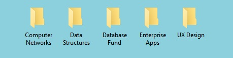
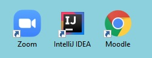

Organising your Desktop
Carrying out your coursework online means that you're going to spend a lot, if not all, of your time looking at your laptop or PC desktop screen. Just like you would (or at least should!) organise your physical notes and work neatly into folders, binders, and refill pads, your online notes and work should be no different! To get the most of your online learning experience, you're going to need to organise all of your online work so that you can easily find and revise everything.
Here, we'll help you get started with organising your laptop or PC desktop (that main screen you see when you start up your computer) to help keep you on top of all your online work.
Step 1: Organise your Files into Folders

First and foremost, we would recommend grouping all of your work into folders on your desktop. To create a folder, left click on your screen while on your desktop and go to New > Folder, then enter your folder name. For Mac, choose File > New Folder.
When it comes to naming your folders, it's up to you whatever way you would like to group your notes. We would recommend grouping by module, like the example above, but it's whatever is easiest and accessible for you. You might decide to name folders by CAs, labs, etc.
Try to abbreviate where you can and avoid long folder names, as there is a limit on how many characters will show on your desktop. At the same time, only abbreviate where you know you will recognise the abbreviation later and not get mixed up!
Once you have your folders named and ready, you can start adding files and notes to them by simply selecting the files and dragging them into the desktop folder.
Step 2: Create Shortcuts your Most Used Sites and Apps

This step will save you some time. There's always going to be sites (like your college site) or apps (like Zoom or Teams etc.) that you will visit daily. Creating shortcuts for these sites on your desktop gives you quick and easy access.
You can do this by left clicking on your screen while on your desktop and go to New > Shortcut. From there, you can hit Browse to find an application on your computer or enter the URL of to the website you want to add (e.g. https://moodle.wit.ie). For Mac, simply click and drag the URL address or application onto the desktop.
Step 3: Keep your Desktop Tidy
The key to a tidy desktop is not to let it get too cluttered. Only add folders and shortcuts you really need, and don't be afraid to delete a few if you find you're not using them.
How you place your shortcuts and folders is important too. Try to keep some sort of structure as to where icons are placed to help you stay on top of everything.
(Optional) Step 4: Customise your Desktop
There are plenty of ways to customise and personalise your desktop. One of the most obvious ways is selecting a background image / colour scheme. You can do this by left clicking and selecting Personalise. On Mac, choose Apple menu > System Preferences, Desktop & Screen Saver, Desktop.
There are plenty of widgets and apps out there to further customise your Desktop. We would recommend Windows' Sticky Notes app, which lets you add custom notes to your desktop. It's extremely useful for short-term reminders and agendas.